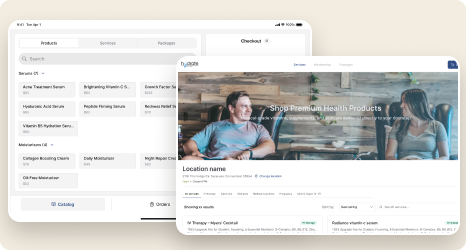
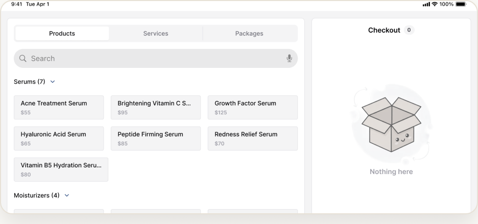
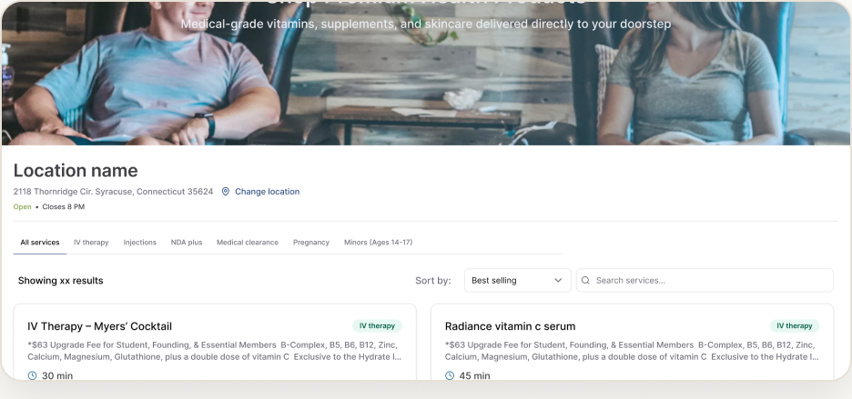

HEALTH & WELLNESS · RESPONSIVE WEB
Multi-Location Commerce & Admin Platform
A unified ecosystem — admin portal, storefront, and POS — for a network of medical spas.
THE PROBLEM
Each location ran on its own disconnected tools, so pricing, inventory, and brand were inconsistent — and head office had no central control.
PROCESS
Audited 4 disconnected tools
Mapped what each location used and where data fell through the cracks.
Designed a central + local model
Head office standardizes; each location controls its own pricing and visibility.
Built on a shared design system
30+ shadcn/ui components across three surfaces.
Three platforms, six roles
Admin, storefront, and POS, each tuned to its users.
OVERVIEW
I designed an ecosystem that lets a head office standardize products, branding, and policy across every clinic, while each location keeps control of its own pricing and what it shows customers.
IMPACT
4 → 1
Four disconnected tools unified into one platform.
30+ components
A shared shadcn/ui system across surfaces.
3 platforms · 6 roles
Admin, storefront, and POS.
SCREENS


